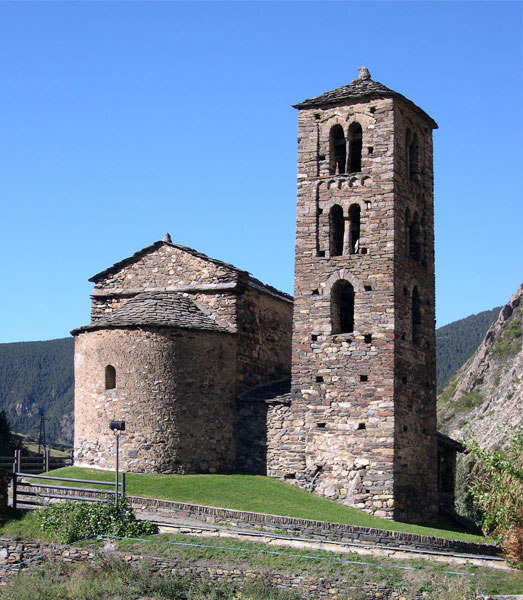

Canillo

Canillo es la parroquia más extensa de Andorra.
Su capital, Canillo pueblo, se encuentra a unos 1500 metros de altitud.
Si tenéis que comprar ropa y material de esquí o montaña, son recomendables los outlets que hay al final del pueblo.
Justo al salir del pueblo, merece la pena una paradita por su fácil acceso (pegada a la carretera), para observar la iglesia de Sant Joan de Caselles (un clásico en entre las postales de Andorra).
Canillo es una parroquia bastante tranquila, que mantiene sus raíces agrículas. Si queréis ambiente, en invierno lo encontraréis en Soldeu, que es el de referencia de ocio nocturno en Canillo, con sus varios pubs llenos de turistas (sobretodo de inglaterra y francia).
Algunos están dentro de una borda, que es la construcción típica andorrana, permitiendo disfrutar de la música y el ambiente en un entorno espectacular y acogedor.
La parroquia de Canillo cuenta también en su territorio con el Valle de Incles, que se encuentra entre Canillo pueblo y la siguiente población, el Tarter. Se trata de un valle de origen glaciar apto para todos los públicos, rodeado de flora y de fauna a lo largo de un río, que cuenta con un itinerario interpretativo el lado peatonal del Valle.